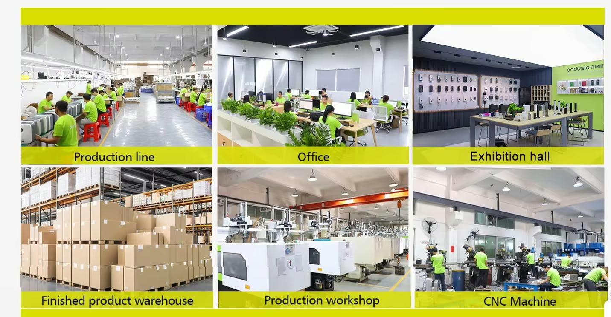
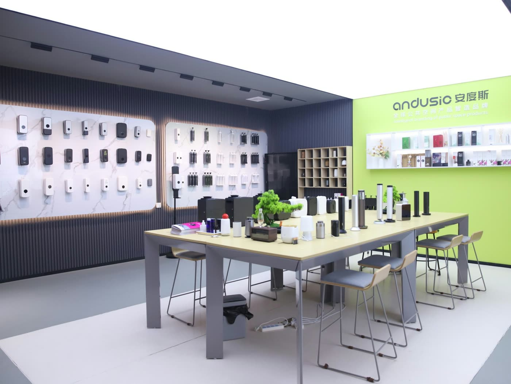

Sitemizdeki koku difüzörlerinin tasarımı ve üretimi, distribütörü olduğumuz Dongguan Andusic Technology Co. Ltd. (Andusic) tarafından yapılır. Bu yazıda üreticimizi; tesisi, ürün grupları, kalite süreçleri ve iş birlikleriyle, şirketin kendi tanıtım sunumundaki bilgilere dayanarak tanıtıyoruz.
Dongguan merkezli bir üretici
Andusic, Çin'in önemli üretim merkezlerinden Dongguan'da kurulmuştur. 2018'den bu yana ticari alanlar, oteller ve kamu sağlığı tesisleri için hijyen ve koku çözümleri geliştiren şirket, kendisini hijyen, çevre, sağlık ve akıllı yaşam alanlarında teknoloji ve sistem çözümü sağlayıcısı olarak tanımlar. Şirketin vurguladığı nokta, bir ticaret şirketi değil üretici olmasıdır: tasarım, üretim, test ve sevkiyat aynı çatı altında yürütülür.
Rakamlarla Andusic
Üreticinin sunumunda paylaştığı rakamlar şöyledir:
- 21 yıl üretim deneyimi
- 20.000 m² kapalı üretim alanı
- 2 milyon setten fazla yıllık üretim kapasitesi
- 80'den fazla ülkeye ihracat
- 10.000'den fazla kurumsal müşteri
- 100'den fazla patent ve buluş

İki ürün grubu
Andusic, ticari tesislerin ihtiyaç duyduğu ürünleri tek tedarikçiden sunmayı hedefler:
- Koku serisi: esans ve aroma difüzörleri ile uyumlu esanslar. Meira'nın Türkiye'de sunduğu ürünler bu seridendir; duvar tipi, klima bağlantılı ve masaüstü modelleri ürün kataloğunda inceleyebilirsiniz.
- Hijyen serisi: sabun dispenserleri, el kurutma makineleri ve havlu dispenserleri. Bu ürünler için talep halinde teklif hazırlıyoruz.
Siparişten sevkiyata dört adım
- Onay: sipariş onaylanır, üretim belgeleri hazırlanır ve malzemeler planlanır.
- Üretim: malzemeler hazırlanır, montaj yapılır; ürünler yaşlandırma ve performans testinden geçer.
- Kalite: üretim sırasında ara kontrol, ardından son kontrol yapılır ve ürünler paketlenir.
- Teslimat: ürünler yüklenir ve konteynerle sevk edilir.
Kalite ve uygunluk
Üretici beyanına göre ürünler CE ve RoHS uyumludur ve esanslar için güvenlik bilgi formu (MSDS) sağlanır. Kalite kontrol; malzeme tedariki, işleme, test ve paketleme aşamalarının her birinde yapılır. İlgili belgeleri teklif sürecinde talep edebilirsiniz.

OEM / ODM iş birlikleri
Üretici, sunumunda BYD, TCL, Skyworth, ICBC, Alibaba Group, OCT, JLL ve COCO Park gibi kurumların yanı sıra hastaneler, üniversiteler ve mülk yönetim şirketleriyle ortak markalı (OEM / ODM) ürünler geliştirdiğini belirtmektedir. Kendi markanız için logo baskısı, renk, ambalaj ya da özel koku talebinizi OEM / ODM formu üzerinden iletebilirsiniz; talebinizi üreticiye iletir ve süreci sizin adınıza takip ederiz.
Meira'nın rolü
Meira, Andusic'in koku ürünlerinin Türkiye distribütörü olarak ürün seçimi, teklif ve tedarik süreçlerini yürütür. Mekânınıza uygun cihazı belirlemek için hacim hesaplayıcıyı kullanabilir ya da teklif formundan bize ulaşabilirsiniz.
Kaynaklar
- Andusic (Dongguan Andusic Technology Co. Ltd.). Şirket tanıtım sunumu: Smart Hygiene & Aroma Solutions.